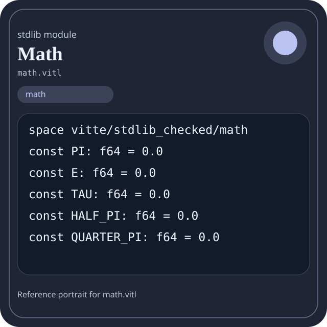

Stdlib module math.vitl
This page is a wiki-style reference for one concrete stdlib file. It explains what the file owns, where it fits in the family, and how to decide whether this is the right surface to depend on.

math.vitl.Family: math
Kind: public stdlib surface
Page style: this reference follows the same “encyclopedic card + portrait + usage contract” logic as the keyword pages, but for stdlib modules.
Summary
- Overview
- Purpose
- Taxonomy
- Implementation profile
- Top-level API inventory
- Position in family
- Declaration map
- Representative signatures
- How to use this module
- User example
- Keyword coverage
- Source shape
- Source landmarks
- Source organization
- Complete API catalog
- Integration boundaries
- Composition guidance
- Relationship table
- Neighbor modules
Overview
| Field | Value |
|---|---|
| Path | math.vitl |
| Family | math |
| Kind | public stdlib surface |
| Line count | 1213 |
| Declared procedures | 283 |
| Declared forms/picks | 12 |
`math.vitl` is a public stdlib surface inside the `math` family. It should be read as one focused slice of the broader family responsibility: Arithmetic, algebra, comparison, calculus, geometry, modular arithmetic, number theory, probability, statistics, matrix, and vector helpers.
Purpose
This file should be chosen because of responsibility, not because its name “sounds close enough”. Inside the math family, it carries one focused part of the contract and keeps that responsibility separate from neighboring concerns.
- A scoring engine can compute aggregates in `math` while keeping I/O and transport elsewhere.
- A statistics or matrix chapter should explain the workflow around the computation, not just a single formula.
Taxonomy
Think of this page as a generated encyclopedia entry rather than a hand-written tutorial. The goal is to show what kind of module this is, how dense it is, and what reading strategy makes sense before depending on it.
- Large algorithm surface: this file exposes many procedures and likely acts as a domain toolkit rather than a single thin wrapper.
- Owns domain vocabulary: the module declares data shapes in addition to executable helpers, so its types are part of the contract.
- Has tuning constants: part of the module behavior is controlled by named constants that document default precision, limits, or policy.
- Minimal top-level dependencies: the module reads as mostly self-contained from its opening declarations.
Implementation profile
This profile is inferred directly from the source text. It does not replace reading the file, but it tells you quickly whether the module is mostly declarative, loop-heavy, branch-heavy, or organized around many small exits.
| Signal | Count | What it suggests |
|---|---|---|
if | 0 | Branching density and local decision-making. |
while | 0 | Loop-heavy or iterative implementation style. |
for | 0 | Collection-style traversal at source level. |
match | 0 | Variant-driven branching or grammar-style decoding. |
let | 0 | Local state and intermediate value density. |
give | 283 | Number of explicit exit points and result shaping. |
Top-level API inventory
| Surface | Items |
|---|---|
| Procedures | math_error_code, math_version, math_name, math_module_count, math_modules, math_manifest, add, sub, mul, div_trunc, rem, abs |
| Forms | Ratio, IntRange, IntStats, Point2i, Size2i, Rect2i, Vec2i, Vec3i, MathManifest, MathHealth, MathSummary |
| Picks | MathError |
| Constants | PI, E, TAU, HALF_PI, QUARTER_PI, DEG_TO_RAD, RAD_TO_DEG, I32_MIN, I32_MAX, BYTE_BITS, WORD_BITS, DEFAULT_SCALE |
| Exports | none declared at top level |
Imported surfaces
This file does not advertise a top-level `use` surface in its opening declarations. That often means it is either self-contained or an aggregation layer.
Position in family
This file is module 1 of 21 in the math family when ordered by path. By procedure count it ranks 1, and by line count it ranks 1. Those ranks are useful as rough signals of breadth, not as quality judgments.
Declaration map
The declaration map turns raw source into a scan-friendly catalog. It is useful when the file is large enough that a reader wants to orient by kinds of surfaces first.
| Line | Name | Kind | Role |
|---|---|---|---|
| 1 | vitte/stdlib_checked/math | space | Declares the namespace that anchors this file in the stdlib tree. |
| 9 | PI | const | Defines a named constant reused across the module. |
| 11 | E | const | Defines a named constant reused across the module. |
| 13 | TAU | const | Defines a named constant reused across the module. |
| 15 | HALF_PI | const | Defines a named constant reused across the module. |
| 17 | QUARTER_PI | const | Defines a named constant reused across the module. |
| 19 | DEG_TO_RAD | const | Defines a named constant reused across the module. |
| 21 | RAD_TO_DEG | const | Defines a named constant reused across the module. |
| 23 | I32_MIN | const | Defines a bound or precision constant that shapes runtime behavior. |
| 25 | I32_MAX | const | Defines a bound or precision constant that shapes runtime behavior. |
| 27 | BYTE_BITS | const | Defines a named constant reused across the module. |
| 29 | WORD_BITS | const | Defines a named constant reused across the module. |
| 31 | DEFAULT_SCALE | const | Defines a named constant reused across the module. |
| 33 | PERCENT_SCALE | const | Defines a named constant reused across the module. |
| 35 | Ratio | form | Introduces a structured data shape that other procedures can exchange. |
| 39 | IntRange | form | Introduces a structured data shape that other procedures can exchange. |
| 43 | IntStats | form | Introduces a structured data shape that other procedures can exchange. |
| 47 | Point2i | form | Introduces a structured data shape that other procedures can exchange. |
| 51 | Size2i | form | Introduces a structured data shape that other procedures can exchange. |
| 55 | Rect2i | form | Introduces a structured data shape that other procedures can exchange. |
| 59 | Vec2i | form | Introduces a structured data shape that other procedures can exchange. |
| 63 | Vec3i | form | Introduces a structured data shape that other procedures can exchange. |
| 67 | MathManifest | form | Introduces a structured data shape that other procedures can exchange. |
| 71 | MathHealth | form | Introduces a structured data shape that other procedures can exchange. |
| 75 | MathSummary | form | Introduces a structured data shape that other procedures can exchange. |
| 79 | MathError | pick | Introduces a tagged variant type used to model distinct outcomes. |
| 83 | math_error_code | proc | Represents one top-level surface in the file contract and should be read as part of the module boundary. |
| 87 | math_version | proc | Represents one top-level surface in the file contract and should be read as part of the module boundary. |
| 91 | math_name | proc | Represents one top-level surface in the file contract and should be read as part of the module boundary. |
| 95 | math_module_count | proc | Represents one top-level surface in the file contract and should be read as part of the module boundary. |
| 99 | math_modules | proc | Represents one top-level surface in the file contract and should be read as part of the module boundary. |
| 103 | math_manifest | proc | Represents one top-level surface in the file contract and should be read as part of the module boundary. |
| 107 | add | proc | Represents one top-level surface in the file contract and should be read as part of the module boundary. |
| 111 | sub | proc | Represents one top-level surface in the file contract and should be read as part of the module boundary. |
| 115 | mul | proc | Represents one top-level surface in the file contract and should be read as part of the module boundary. |
| 119 | div_trunc | proc | Represents one top-level surface in the file contract and should be read as part of the module boundary. |
| 123 | rem | proc | Represents one top-level surface in the file contract and should be read as part of the module boundary. |
| 127 | abs | proc | Represents one top-level surface in the file contract and should be read as part of the module boundary. |
| 131 | min | proc | Represents one top-level surface in the file contract and should be read as part of the module boundary. |
| 135 | max | proc | Represents one top-level surface in the file contract and should be read as part of the module boundary. |
| 139 | clamp | proc | Represents one top-level surface in the file contract and should be read as part of the module boundary. |
| 143 | sign | proc | Implements a security-sensitive transformation in the crypto boundary. |
| 147 | between | proc | Represents one top-level surface in the file contract and should be read as part of the module boundary. |
| 151 | compare | proc | Represents one top-level surface in the file contract and should be read as part of the module boundary. |
| 155 | neg | proc | Represents one top-level surface in the file contract and should be read as part of the module boundary. |
| 159 | inc | proc | Represents one top-level surface in the file contract and should be read as part of the module boundary. |
| 163 | dec | proc | Represents one top-level surface in the file contract and should be read as part of the module boundary. |
| 167 | square | proc | Represents one top-level surface in the file contract and should be read as part of the module boundary. |
| 171 | cube | proc | Represents one top-level surface in the file contract and should be read as part of the module boundary. |
| 175 | avg2 | proc | Represents one top-level surface in the file contract and should be read as part of the module boundary. |
| 179 | midpoint | proc | Represents one top-level surface in the file contract and should be read as part of the module boundary. |
| 183 | safe_div | proc | Represents one top-level surface in the file contract and should be read as part of the module boundary. |
| 187 | safe_rem | proc | Represents one top-level surface in the file contract and should be read as part of the module boundary. |
| 191 | saturating_add | proc | Represents one top-level surface in the file contract and should be read as part of the module boundary. |
| 195 | saturating_sub | proc | Represents one top-level surface in the file contract and should be read as part of the module boundary. |
| 199 | saturating_mul | proc | Represents one top-level surface in the file contract and should be read as part of the module boundary. |
| 203 | checked_add_valid | proc | Represents one top-level surface in the file contract and should be read as part of the module boundary. |
| 207 | checked_mul_valid | proc | Represents one top-level surface in the file contract and should be read as part of the module boundary. |
| 211 | gcd | proc | Represents one top-level surface in the file contract and should be read as part of the module boundary. |
| 215 | lcm | proc | Represents one top-level surface in the file contract and should be read as part of the module boundary. |
| 219 | gcd_many | proc | Represents one top-level surface in the file contract and should be read as part of the module boundary. |
| 223 | lcm_many | proc | Represents one top-level surface in the file contract and should be read as part of the module boundary. |
| 227 | is_even | proc | Represents one top-level surface in the file contract and should be read as part of the module boundary. |
| 231 | is_odd | proc | Represents one top-level surface in the file contract and should be read as part of the module boundary. |
| 235 | is_prime | proc | Represents one top-level surface in the file contract and should be read as part of the module boundary. |
| 239 | is_composite | proc | Represents one top-level surface in the file contract and should be read as part of the module boundary. |
| 243 | next_prime | proc | Represents one top-level surface in the file contract and should be read as part of the module boundary. |
| 247 | prev_prime | proc | Represents one top-level surface in the file contract and should be read as part of the module boundary. |
| 251 | prime_factors | proc | Represents one top-level surface in the file contract and should be read as part of the module boundary. |
| 255 | divisors | proc | Represents one top-level surface in the file contract and should be read as part of the module boundary. |
| 259 | totient | proc | Represents one top-level surface in the file contract and should be read as part of the module boundary. |
| 263 | coprime | proc | Represents one top-level surface in the file contract and should be read as part of the module boundary. |
| 267 | pow_int | proc | Represents one top-level surface in the file contract and should be read as part of the module boundary. |
| 271 | pow2 | proc | Represents one top-level surface in the file contract and should be read as part of the module boundary. |
| 275 | pow10 | proc | Represents one top-level surface in the file contract and should be read as part of the module boundary. |
| 279 | factorial | proc | Implements a counting or probability helper inside the math boundary. |
| 283 | triangular | proc | Represents one top-level surface in the file contract and should be read as part of the module boundary. |
| 287 | fibonacci | proc | Represents one top-level surface in the file contract and should be read as part of the module boundary. |
| 291 | binomial | proc | Implements a counting or probability helper inside the math boundary. |
| 295 | falling_factorial | proc | Implements a counting or probability helper inside the math boundary. |
| 299 | rising_factorial | proc | Implements a counting or probability helper inside the math boundary. |
| 303 | double_factorial | proc | Implements a counting or probability helper inside the math boundary. |
| 307 | sqrt_floor | proc | Represents one top-level surface in the file contract and should be read as part of the module boundary. |
| 311 | sqrt_ceil | proc | Represents one top-level surface in the file contract and should be read as part of the module boundary. |
| 315 | cube_root_floor | proc | Represents one top-level surface in the file contract and should be read as part of the module boundary. |
| 319 | cube_root_ceil | proc | Represents one top-level surface in the file contract and should be read as part of the module boundary. |
| 323 | is_square | proc | Represents one top-level surface in the file contract and should be read as part of the module boundary. |
| 327 | is_cube | proc | Represents one top-level surface in the file contract and should be read as part of the module boundary. |
| 331 | ilog2_floor | proc | Represents one top-level surface in the file contract and should be read as part of the module boundary. |
| 335 | ilog10_floor | proc | Represents one top-level surface in the file contract and should be read as part of the module boundary. |
| 339 | ceil_div | proc | Represents one top-level surface in the file contract and should be read as part of the module boundary. |
| 343 | floor_div | proc | Represents one top-level surface in the file contract and should be read as part of the module boundary. |
| 347 | floor_mod | proc | Represents one top-level surface in the file contract and should be read as part of the module boundary. |
| 351 | div_round_nearest | proc | Represents one top-level surface in the file contract and should be read as part of the module boundary. |
| 355 | mod_normalize | proc | Represents one top-level surface in the file contract and should be read as part of the module boundary. |
| 359 | mod_add | proc | Represents one top-level surface in the file contract and should be read as part of the module boundary. |
| 363 | mod_sub | proc | Represents one top-level surface in the file contract and should be read as part of the module boundary. |
| 367 | mod_mul | proc | Represents one top-level surface in the file contract and should be read as part of the module boundary. |
| 371 | mod_pow | proc | Represents one top-level surface in the file contract and should be read as part of the module boundary. |
| 375 | mod_neg | proc | Represents one top-level surface in the file contract and should be read as part of the module boundary. |
| 379 | mod_inverse | proc | Represents one top-level surface in the file contract and should be read as part of the module boundary. |
| 383 | mod_div | proc | Represents one top-level surface in the file contract and should be read as part of the module boundary. |
| 387 | is_pow2 | proc | Represents one top-level surface in the file contract and should be read as part of the module boundary. |
| 391 | prev_pow2 | proc | Represents one top-level surface in the file contract and should be read as part of the module boundary. |
| 395 | next_pow2 | proc | Represents one top-level surface in the file contract and should be read as part of the module boundary. |
| 399 | has_single_bit | proc | Represents one top-level surface in the file contract and should be read as part of the module boundary. |
| 403 | bit_floor | proc | Represents one top-level surface in the file contract and should be read as part of the module boundary. |
| 407 | bit_ceil | proc | Represents one top-level surface in the file contract and should be read as part of the module boundary. |
| 411 | bit_width | proc | Represents one top-level surface in the file contract and should be read as part of the module boundary. |
| 415 | bit_count | proc | Represents one top-level surface in the file contract and should be read as part of the module boundary. |
| 419 | lowbit | proc | Represents one top-level surface in the file contract and should be read as part of the module boundary. |
| 423 | lowbit_pow2 | proc | Represents one top-level surface in the file contract and should be read as part of the module boundary. |
| 427 | parity | proc | Represents one top-level surface in the file contract and should be read as part of the module boundary. |
| 431 | is_bit_set | proc | Owns a concrete data shape or the operations that maintain it. |
| 435 | set_bit | proc | Owns a concrete data shape or the operations that maintain it. |
| 439 | clear_bit | proc | Represents one top-level surface in the file contract and should be read as part of the module boundary. |
| 443 | toggle_bit | proc | Represents one top-level surface in the file contract and should be read as part of the module boundary. |
| 447 | align_down | proc | Represents one top-level surface in the file contract and should be read as part of the module boundary. |
| 451 | align_up | proc | Represents one top-level surface in the file contract and should be read as part of the module boundary. |
| 455 | round_to | proc | Represents one top-level surface in the file contract and should be read as part of the module boundary. |
| 459 | floor_to | proc | Represents one top-level surface in the file contract and should be read as part of the module boundary. |
| 463 | round_down_pow2 | proc | Represents one top-level surface in the file contract and should be read as part of the module boundary. |
| 467 | round_up_pow2 | proc | Represents one top-level surface in the file contract and should be read as part of the module boundary. |
| 471 | clamp_zero | proc | Represents one top-level surface in the file contract and should be read as part of the module boundary. |
| 475 | clamp_nonzero | proc | Represents one top-level surface in the file contract and should be read as part of the module boundary. |
| 479 | clamp_percent | proc | Represents one top-level surface in the file contract and should be read as part of the module boundary. |
| 483 | lerp_int | proc | Represents one top-level surface in the file contract and should be read as part of the module boundary. |
| 487 | inv_lerp_int | proc | Represents one top-level surface in the file contract and should be read as part of the module boundary. |
| 491 | remap_int | proc | Represents one top-level surface in the file contract and should be read as part of the module boundary. |
| 495 | smoothstep_scaled | proc | Represents one top-level surface in the file contract and should be read as part of the module boundary. |
| 499 | ratio_new | proc | Represents one top-level surface in the file contract and should be read as part of the module boundary. |
| 503 | ratio_add | proc | Represents one top-level surface in the file contract and should be read as part of the module boundary. |
| 507 | ratio_sub | proc | Represents one top-level surface in the file contract and should be read as part of the module boundary. |
| 511 | ratio_mul | proc | Represents one top-level surface in the file contract and should be read as part of the module boundary. |
| 515 | ratio_div | proc | Represents one top-level surface in the file contract and should be read as part of the module boundary. |
| 519 | ratio_to_scaled | proc | Represents one top-level surface in the file contract and should be read as part of the module boundary. |
| 523 | ratio_percent | proc | Represents one top-level surface in the file contract and should be read as part of the module boundary. |
| 527 | rect_area | proc | Represents one top-level surface in the file contract and should be read as part of the module boundary. |
| 531 | rect_perimeter | proc | Represents one top-level surface in the file contract and should be read as part of the module boundary. |
| 535 | triangle_area2 | proc | Represents one top-level surface in the file contract and should be read as part of the module boundary. |
| 539 | distance_sq | proc | Represents one top-level surface in the file contract and should be read as part of the module boundary. |
| 543 | manhattan_distance | proc | Represents one top-level surface in the file contract and should be read as part of the module boundary. |
| 547 | point | proc | Represents one top-level surface in the file contract and should be read as part of the module boundary. |
| 551 | size2 | proc | Represents one top-level surface in the file contract and should be read as part of the module boundary. |
| 555 | rect | proc | Represents one top-level surface in the file contract and should be read as part of the module boundary. |
| 559 | vec2i | proc | Represents one top-level surface in the file contract and should be read as part of the module boundary. |
| 563 | vec3i | proc | Represents one top-level surface in the file contract and should be read as part of the module boundary. |
| 567 | point_distance_sq | proc | Represents one top-level surface in the file contract and should be read as part of the module boundary. |
| 571 | point_manhattan | proc | Represents one top-level surface in the file contract and should be read as part of the module boundary. |
| 575 | rect_right | proc | Represents one top-level surface in the file contract and should be read as part of the module boundary. |
| 579 | rect_bottom | proc | Represents one top-level surface in the file contract and should be read as part of the module boundary. |
| 583 | rect_contains_point | proc | Represents one top-level surface in the file contract and should be read as part of the module boundary. |
| 587 | rect_intersects | proc | Represents one top-level surface in the file contract and should be read as part of the module boundary. |
| 591 | vec | proc | Represents one top-level surface in the file contract and should be read as part of the module boundary. |
| 595 | vec_add | proc | Represents one top-level surface in the file contract and should be read as part of the module boundary. |
| 599 | vec_sub | proc | Represents one top-level surface in the file contract and should be read as part of the module boundary. |
| 603 | vec_scale | proc | Represents one top-level surface in the file contract and should be read as part of the module boundary. |
| 607 | vec_dot | proc | Represents one top-level surface in the file contract and should be read as part of the module boundary. |
| 611 | vec_norm_sq | proc | Represents one top-level surface in the file contract and should be read as part of the module boundary. |
| 615 | vec2i_add | proc | Represents one top-level surface in the file contract and should be read as part of the module boundary. |
| 619 | vec2i_sub | proc | Represents one top-level surface in the file contract and should be read as part of the module boundary. |
| 623 | vec2i_scale | proc | Represents one top-level surface in the file contract and should be read as part of the module boundary. |
| 627 | vec2i_dot | proc | Represents one top-level surface in the file contract and should be read as part of the module boundary. |
| 631 | vec2i_cross | proc | Represents one top-level surface in the file contract and should be read as part of the module boundary. |
| 635 | vec2i_norm_sq | proc | Represents one top-level surface in the file contract and should be read as part of the module boundary. |
| 639 | vec3i_add | proc | Represents one top-level surface in the file contract and should be read as part of the module boundary. |
| 643 | vec3i_sub | proc | Represents one top-level surface in the file contract and should be read as part of the module boundary. |
| 647 | vec3i_scale | proc | Represents one top-level surface in the file contract and should be read as part of the module boundary. |
| 651 | vec3i_dot | proc | Represents one top-level surface in the file contract and should be read as part of the module boundary. |
| 655 | vec3i_cross | proc | Represents one top-level surface in the file contract and should be read as part of the module boundary. |
| 659 | vec3i_norm_sq | proc | Represents one top-level surface in the file contract and should be read as part of the module boundary. |
| 663 | cx | proc | Represents one top-level surface in the file contract and should be read as part of the module boundary. |
| 667 | cx_add | proc | Represents one top-level surface in the file contract and should be read as part of the module boundary. |
| 671 | cx_sub | proc | Represents one top-level surface in the file contract and should be read as part of the module boundary. |
| 675 | cx_mul | proc | Represents one top-level surface in the file contract and should be read as part of the module boundary. |
| 679 | cx_conj | proc | Represents one top-level surface in the file contract and should be read as part of the module boundary. |
| 683 | cx_abs_sq | proc | Represents one top-level surface in the file contract and should be read as part of the module boundary. |
| 687 | mat | proc | Represents one top-level surface in the file contract and should be read as part of the module boundary. |
| 691 | mat_id | proc | Represents one top-level surface in the file contract and should be read as part of the module boundary. |
| 695 | mat_add | proc | Represents one top-level surface in the file contract and should be read as part of the module boundary. |
| 699 | mat_sub | proc | Represents one top-level surface in the file contract and should be read as part of the module boundary. |
| 703 | mat_mul | proc | Represents one top-level surface in the file contract and should be read as part of the module boundary. |
| 707 | mat_trace | proc | Represents one top-level surface in the file contract and should be read as part of the module boundary. |
| 711 | mat_det | proc | Represents one top-level surface in the file contract and should be read as part of the module boundary. |
| 715 | arr_len | proc | Represents one top-level surface in the file contract and should be read as part of the module boundary. |
| 719 | arr_is_empty | proc | Represents one top-level surface in the file contract and should be read as part of the module boundary. |
| 723 | arr_first | proc | Represents one top-level surface in the file contract and should be read as part of the module boundary. |
| 727 | arr_last | proc | Represents one top-level surface in the file contract and should be read as part of the module boundary. |
| 731 | arr_contains | proc | Represents one top-level surface in the file contract and should be read as part of the module boundary. |
| 735 | arr_index_of | proc | Represents one top-level surface in the file contract and should be read as part of the module boundary. |
| 739 | arr_count | proc | Represents one top-level surface in the file contract and should be read as part of the module boundary. |
| 743 | arr_last_index_of | proc | Represents one top-level surface in the file contract and should be read as part of the module boundary. |
| 747 | arr_copy | proc | Represents one top-level surface in the file contract and should be read as part of the module boundary. |
| 751 | arr_append | proc | Represents one top-level surface in the file contract and should be read as part of the module boundary. |
| 755 | arr_prepend | proc | Represents one top-level surface in the file contract and should be read as part of the module boundary. |
| 759 | arr_concat | proc | Represents one top-level surface in the file contract and should be read as part of the module boundary. |
| 763 | arr_push | proc | Represents one top-level surface in the file contract and should be read as part of the module boundary. |
| 767 | arr_set | proc | Owns a concrete data shape or the operations that maintain it. |
| 771 | arr_swap | proc | Represents one top-level surface in the file contract and should be read as part of the module boundary. |
| 775 | arr_clear | proc | Represents one top-level surface in the file contract and should be read as part of the module boundary. |
| 779 | arr_pop | proc | Represents one top-level surface in the file contract and should be read as part of the module boundary. |
| 783 | arr_pop_at | proc | Represents one top-level surface in the file contract and should be read as part of the module boundary. |
| 787 | arr_insert | proc | Represents one top-level surface in the file contract and should be read as part of the module boundary. |
| 791 | arr_remove_at | proc | Represents one top-level surface in the file contract and should be read as part of the module boundary. |
| 795 | arr_repeat | proc | Represents one top-level surface in the file contract and should be read as part of the module boundary. |
| 799 | arr_fill | proc | Represents one top-level surface in the file contract and should be read as part of the module boundary. |
| 803 | arr_reverse | proc | Represents one top-level surface in the file contract and should be read as part of the module boundary. |
| 807 | arr_sum | proc | Represents one top-level surface in the file contract and should be read as part of the module boundary. |
| 811 | arr_min | proc | Represents one top-level surface in the file contract and should be read as part of the module boundary. |
| 815 | arr_max | proc | Represents one top-level surface in the file contract and should be read as part of the module boundary. |
| 819 | arr_mean | proc | Represents one top-level surface in the file contract and should be read as part of the module boundary. |
| 823 | arr_mean_scaled | proc | Represents one top-level surface in the file contract and should be read as part of the module boundary. |
| 827 | arr_range | proc | Represents one top-level surface in the file contract and should be read as part of the module boundary. |
| 831 | arr_sum_abs | proc | Represents one top-level surface in the file contract and should be read as part of the module boundary. |
| 835 | arr_product | proc | Represents one top-level surface in the file contract and should be read as part of the module boundary. |
| 839 | arr_any | proc | Represents one top-level surface in the file contract and should be read as part of the module boundary. |
| 843 | arr_all | proc | Represents one top-level surface in the file contract and should be read as part of the module boundary. |
| 847 | arr_count_nonzero | proc | Represents one top-level surface in the file contract and should be read as part of the module boundary. |
| 851 | arr_prefix_sum | proc | Represents one top-level surface in the file contract and should be read as part of the module boundary. |
| 855 | arr_prefix_min | proc | Represents one top-level surface in the file contract and should be read as part of the module boundary. |
| 859 | arr_prefix_max | proc | Represents one top-level surface in the file contract and should be read as part of the module boundary. |
| 863 | arr_take | proc | Represents one top-level surface in the file contract and should be read as part of the module boundary. |
| 867 | arr_drop | proc | Represents one top-level surface in the file contract and should be read as part of the module boundary. |
| 871 | arr_head | proc | Represents one top-level surface in the file contract and should be read as part of the module boundary. |
| 875 | arr_tail | proc | Represents one top-level surface in the file contract and should be read as part of the module boundary. |
| 879 | arr_slice | proc | Represents one top-level surface in the file contract and should be read as part of the module boundary. |
| 883 | arr_rotate_left | proc | Represents one top-level surface in the file contract and should be read as part of the module boundary. |
| 887 | arr_rotate_right | proc | Represents one top-level surface in the file contract and should be read as part of the module boundary. |
| 891 | arr_replace_slice | proc | Represents one top-level surface in the file contract and should be read as part of the module boundary. |
| 895 | arr_splice | proc | Represents one top-level surface in the file contract and should be read as part of the module boundary. |
| 899 | arr_rotate | proc | Represents one top-level surface in the file contract and should be read as part of the module boundary. |
| 903 | arr_enumerate | proc | Represents one top-level surface in the file contract and should be read as part of the module boundary. |
| 907 | arr_zip | proc | Represents one top-level surface in the file contract and should be read as part of the module boundary. |
| 911 | arr_chunks | proc | Represents one top-level surface in the file contract and should be read as part of the module boundary. |
| 915 | arr_clamp_each | proc | Represents one top-level surface in the file contract and should be read as part of the module boundary. |
| 919 | arr_get | proc | Represents one top-level surface in the file contract and should be read as part of the module boundary. |
| 923 | arr_stats | proc | Represents one top-level surface in the file contract and should be read as part of the module boundary. |
| 927 | arr_sort_simple | proc | Represents one top-level surface in the file contract and should be read as part of the module boundary. |
| 931 | arr_median_floor | proc | Represents one top-level surface in the file contract and should be read as part of the module boundary. |
| 935 | arr_variance_scaled | proc | Represents one top-level surface in the file contract and should be read as part of the module boundary. |
| 939 | arr_stddev_floor | proc | Represents one top-level surface in the file contract and should be read as part of the module boundary. |
| 943 | permutations | proc | Implements a counting or probability helper inside the math boundary. |
| 947 | combinations | proc | Implements a counting or probability helper inside the math boundary. |
| 951 | probability_percent | proc | Implements a counting or probability helper inside the math boundary. |
| 955 | odds_ratio | proc | Represents one top-level surface in the file contract and should be read as part of the module boundary. |
| 959 | pairings | proc | Represents one top-level surface in the file contract and should be read as part of the module boundary. |
| 963 | percent | proc | Represents one top-level surface in the file contract and should be read as part of the module boundary. |
| 967 | percent_scaled | proc | Represents one top-level surface in the file contract and should be read as part of the module boundary. |
| 971 | arithmetic_term | proc | Represents one top-level surface in the file contract and should be read as part of the module boundary. |
| 975 | arithmetic_sum | proc | Represents one top-level surface in the file contract and should be read as part of the module boundary. |
| 979 | geometric_term | proc | Represents one top-level surface in the file contract and should be read as part of the module boundary. |
| 983 | triangular_term | proc | Represents one top-level surface in the file contract and should be read as part of the module boundary. |
| 987 | fibonacci_term | proc | Represents one top-level surface in the file contract and should be read as part of the module boundary. |
| 991 | finite_difference | proc | Represents one top-level surface in the file contract and should be read as part of the module boundary. |
| 995 | slope_between | proc | Represents one top-level surface in the file contract and should be read as part of the module boundary. |
| 999 | derivative_at_int | proc | Represents one top-level surface in the file contract and should be read as part of the module boundary. |
| 1003 | normalize_degrees | proc | Represents one top-level surface in the file contract and should be read as part of the module boundary. |
| 1007 | opposite_angle | proc | Represents one top-level surface in the file contract and should be read as part of the module boundary. |
| 1011 | complement_angle | proc | Represents one top-level surface in the file contract and should be read as part of the module boundary. |
| 1015 | supplement_angle | proc | Represents one top-level surface in the file contract and should be read as part of the module boundary. |
| 1019 | quadrant | proc | Represents one top-level surface in the file contract and should be read as part of the module boundary. |
| 1023 | is_right_angle | proc | Represents one top-level surface in the file contract and should be read as part of the module boundary. |
| 1027 | is_straight_angle | proc | Represents one top-level surface in the file contract and should be read as part of the module boundary. |
| 1031 | degrees_to_radians | proc | Represents one top-level surface in the file contract and should be read as part of the module boundary. |
| 1035 | radians_to_degrees | proc | Represents one top-level surface in the file contract and should be read as part of the module boundary. |
| 1039 | sin | proc | Represents one top-level surface in the file contract and should be read as part of the module boundary. |
| 1043 | cos | proc | Represents one top-level surface in the file contract and should be read as part of the module boundary. |
| 1047 | tan | proc | Represents one top-level surface in the file contract and should be read as part of the module boundary. |
| 1051 | asin | proc | Represents one top-level surface in the file contract and should be read as part of the module boundary. |
| 1055 | acos | proc | Represents one top-level surface in the file contract and should be read as part of the module boundary. |
| 1059 | atan | proc | Represents one top-level surface in the file contract and should be read as part of the module boundary. |
| 1063 | atan2 | proc | Represents one top-level surface in the file contract and should be read as part of the module boundary. |
| 1067 | sinh | proc | Represents one top-level surface in the file contract and should be read as part of the module boundary. |
| 1071 | cosh | proc | Represents one top-level surface in the file contract and should be read as part of the module boundary. |
| 1075 | tanh | proc | Represents one top-level surface in the file contract and should be read as part of the module boundary. |
| 1079 | asinh | proc | Represents one top-level surface in the file contract and should be read as part of the module boundary. |
| 1083 | acosh | proc | Represents one top-level surface in the file contract and should be read as part of the module boundary. |
| 1087 | atanh | proc | Represents one top-level surface in the file contract and should be read as part of the module boundary. |
| 1091 | exp | proc | Represents one top-level surface in the file contract and should be read as part of the module boundary. |
| 1095 | log | proc | Represents one top-level surface in the file contract and should be read as part of the module boundary. |
| 1099 | log10 | proc | Represents one top-level surface in the file contract and should be read as part of the module boundary. |
| 1103 | pow | proc | Represents one top-level surface in the file contract and should be read as part of the module boundary. |
| 1107 | sqrt | proc | Represents one top-level surface in the file contract and should be read as part of the module boundary. |
| 1111 | fabs | proc | Represents one top-level surface in the file contract and should be read as part of the module boundary. |
| 1115 | fmod | proc | Represents one top-level surface in the file contract and should be read as part of the module boundary. |
| 1119 | ceil | proc | Represents one top-level surface in the file contract and should be read as part of the module boundary. |
| 1123 | floor | proc | Represents one top-level surface in the file contract and should be read as part of the module boundary. |
| 1127 | round_f64 | proc | Represents one top-level surface in the file contract and should be read as part of the module boundary. |
| 1131 | trunc_f64 | proc | Represents one top-level surface in the file contract and should be read as part of the module boundary. |
| 1135 | fract_f64 | proc | Represents one top-level surface in the file contract and should be read as part of the module boundary. |
| 1139 | clamp_f64 | proc | Represents one top-level surface in the file contract and should be read as part of the module boundary. |
| 1143 | min_f64 | proc | Represents one top-level surface in the file contract and should be read as part of the module boundary. |
| 1147 | max_f64 | proc | Represents one top-level surface in the file contract and should be read as part of the module boundary. |
| 1151 | lerp_f64 | proc | Represents one top-level surface in the file contract and should be read as part of the module boundary. |
| 1155 | smoothstep_f64 | proc | Represents one top-level surface in the file contract and should be read as part of the module boundary. |
| 1159 | is_nan | proc | Represents one top-level surface in the file contract and should be read as part of the module boundary. |
| 1163 | is_infinite | proc | Represents one top-level surface in the file contract and should be read as part of the module boundary. |
| 1167 | is_finite | proc | Represents one top-level surface in the file contract and should be read as part of the module boundary. |
| 1171 | math_ready | proc | Represents one top-level surface in the file contract and should be read as part of the module boundary. |
| 1175 | math_health | proc | Represents one top-level surface in the file contract and should be read as part of the module boundary. |
| 1179 | math_summary | proc | Represents one top-level surface in the file contract and should be read as part of the module boundary. |
| 1183 | math_domains | proc | Represents one top-level surface in the file contract and should be read as part of the module boundary. |
| 1187 | library_meta | proc | Represents one top-level surface in the file contract and should be read as part of the module boundary. |
| 1191 | math_selftest | proc | Represents one top-level surface in the file contract and should be read as part of the module boundary. |
| 1195 | stdlib_smoke_1 | proc | Represents one top-level surface in the file contract and should be read as part of the module boundary. |
| 1199 | stdlib_smoke_2 | proc | Represents one top-level surface in the file contract and should be read as part of the module boundary. |
| 1203 | stdlib_smoke_3 | proc | Represents one top-level surface in the file contract and should be read as part of the module boundary. |
| 1207 | stdlib_smoke_4 | proc | Represents one top-level surface in the file contract and should be read as part of the module boundary. |
| 1211 | stdlib_smoke_5 | proc | Represents one top-level surface in the file contract and should be read as part of the module boundary. |
The table is exhaustive for top-level declarations of the selected kinds. This file declares 309 matching surfaces.
Representative signatures
These signatures are shown in source order so the page keeps the feel of a reference manual, not just a keyword cloud.
const PI: f64 = 0.0(line 9)const E: f64 = 0.0(line 11)const TAU: f64 = 0.0(line 13)const HALF_PI: f64 = 0.0(line 15)const QUARTER_PI: f64 = 0.0(line 17)const DEG_TO_RAD: f64 = 0.0(line 19)const RAD_TO_DEG: f64 = 0.0(line 21)const I32_MIN: int = 0(line 23)const I32_MAX: int = 0(line 25)const BYTE_BITS: int = 0(line 27)const WORD_BITS: int = 0(line 29)const DEFAULT_SCALE: int = 0(line 31)const PERCENT_SCALE: int = 0(line 33)form Ratio {(line 35)form IntRange {(line 39)form IntStats {(line 43)form Point2i {(line 47)form Size2i {(line 51)
The list is intentionally capped here; the source file declares 308 matching signatures in total.
How to use this module
Start by reading the file as an ownership boundary. Ask three questions: what enters this module, what stable types or procedures it exports, and what adjacent module should stay outside of it.
- Read
spaceand top-level imports first so the ownership boundary ofmath.vitlis explicit. - Scan constants before procedures; they often encode precision, limits, or policy assumptions that explain later behavior.
- Read declared forms and picks before algorithms so the data vocabulary is stable in your head.
- Traverse procedures in source order; the early helpers usually explain the naming and numeric conventions used later.
- Only after that compare neighbor modules, because the right boundary choice matters more than memorizing one helper name.
User example
This example is generated from the actual stdlib module surface. Its job is not to be the smallest snippet possible; its job is to show a realistic consumer-shaped file that exercises the module and mirrors the language keywords the module itself relies on.
space demo/math
const SAMPLE_LABEL: string = "demo"
form UserReport {
label: string,
ready: bool
}
pick UserOutcome {
case Ready(message: string)
case Empty(reason: string)
}
proc run_example() -> UserOutcome {
give UserOutcome.Ready("ok")
}Keyword coverage
This table makes the “all keywords of the module” requirement auditable. It compares the detected Vitte keywords in the source file with the generated consumer example above.
| Keyword | Present in module source | Used in generated user example |
|---|---|---|
space | yes | yes |
const | yes | yes |
form | yes | yes |
pick | yes | yes |
proc | yes | yes |
give | yes | yes |
The generated snippet exercises every detected Vitte keyword used by this module.
Source shape
space vitte/stdlib_checked/math
const PI: f64 = 0.0
const E: f64 = 0.0
const TAU: f64 = 0.0
const HALF_PI: f64 = 0.0
const QUARTER_PI: f64 = 0.0
const DEG_TO_RAD: f64 = 0.0
const RAD_TO_DEG: f64 = 0.0
const I32_MIN: int = 0
const I32_MAX: int = 0The excerpt is not meant to replace the file. It exists to make the module recognizable at first glance, the same way a Wikipedia infobox helps the reader orient before reading the whole article.
Source landmarks
Large files are easier to retain when they have visible landmarks. When the source contains explicit section banners, they are surfaced here; otherwise the first major declarations are used as anchors.
- Line 1:
space vitte/stdlib_checked/math - Line 9:
const PI: f64 = 0.0 - Line 11:
const E: f64 = 0.0 - Line 13:
const TAU: f64 = 0.0 - Line 15:
const HALF_PI: f64 = 0.0 - Line 17:
const QUARTER_PI: f64 = 0.0 - Line 19:
const DEG_TO_RAD: f64 = 0.0 - Line 21:
const RAD_TO_DEG: f64 = 0.0
Source organization
When a file carries its own internal chaptering, those chapters usually reveal the intended reading order better than a flat symbol list. This section reconstructs that organization from the source itself.
File surfaces
Top-level items: 309. Procedures: 283. Data surfaces: 12. Constants: 13.
First visible names: vitte/stdlib_checked/math, PI, E, TAU, HALF_PI, QUARTER_PI, DEG_TO_RAD, RAD_TO_DEG, I32_MIN, I32_MAX
Complete API catalog
This catalog is the exhaustive file-level index for the module. It is intentionally closer to a generated encyclopedia appendix than to a tutorial summary.
Constants
| Line | Name | Signature | Role |
|---|---|---|---|
| 9 | PI | const PI: f64 = 0.0 | Defines a named constant reused across the module. |
| 11 | E | const E: f64 = 0.0 | Defines a named constant reused across the module. |
| 13 | TAU | const TAU: f64 = 0.0 | Defines a named constant reused across the module. |
| 15 | HALF_PI | const HALF_PI: f64 = 0.0 | Defines a named constant reused across the module. |
| 17 | QUARTER_PI | const QUARTER_PI: f64 = 0.0 | Defines a named constant reused across the module. |
| 19 | DEG_TO_RAD | const DEG_TO_RAD: f64 = 0.0 | Defines a named constant reused across the module. |
| 21 | RAD_TO_DEG | const RAD_TO_DEG: f64 = 0.0 | Defines a named constant reused across the module. |
| 23 | I32_MIN | const I32_MIN: int = 0 | Defines a bound or precision constant that shapes runtime behavior. |
| 25 | I32_MAX | const I32_MAX: int = 0 | Defines a bound or precision constant that shapes runtime behavior. |
| 27 | BYTE_BITS | const BYTE_BITS: int = 0 | Defines a named constant reused across the module. |
| 29 | WORD_BITS | const WORD_BITS: int = 0 | Defines a named constant reused across the module. |
| 31 | DEFAULT_SCALE | const DEFAULT_SCALE: int = 0 | Defines a named constant reused across the module. |
| 33 | PERCENT_SCALE | const PERCENT_SCALE: int = 0 | Defines a named constant reused across the module. |
Data surfaces
| Line | Name | Signature | Role |
|---|---|---|---|
| 35 | Ratio | form Ratio { | Introduces a structured data shape that other procedures can exchange. |
| 39 | IntRange | form IntRange { | Introduces a structured data shape that other procedures can exchange. |
| 43 | IntStats | form IntStats { | Introduces a structured data shape that other procedures can exchange. |
| 47 | Point2i | form Point2i { | Introduces a structured data shape that other procedures can exchange. |
| 51 | Size2i | form Size2i { | Introduces a structured data shape that other procedures can exchange. |
| 55 | Rect2i | form Rect2i { | Introduces a structured data shape that other procedures can exchange. |
| 59 | Vec2i | form Vec2i { | Introduces a structured data shape that other procedures can exchange. |
| 63 | Vec3i | form Vec3i { | Introduces a structured data shape that other procedures can exchange. |
| 67 | MathManifest | form MathManifest { | Introduces a structured data shape that other procedures can exchange. |
| 71 | MathHealth | form MathHealth { | Introduces a structured data shape that other procedures can exchange. |
| 75 | MathSummary | form MathSummary { | Introduces a structured data shape that other procedures can exchange. |
| 79 | MathError | pick MathError { | Introduces a tagged variant type used to model distinct outcomes. |
Procedures
| Line | Name | Signature | Role |
|---|---|---|---|
| 83 | math_error_code | proc math_error_code() -> int { | Represents one top-level surface in the file contract and should be read as part of the module boundary. |
| 87 | math_version | proc math_version() -> int { | Represents one top-level surface in the file contract and should be read as part of the module boundary. |
| 91 | math_name | proc math_name() -> int { | Represents one top-level surface in the file contract and should be read as part of the module boundary. |
| 95 | math_module_count | proc math_module_count() -> int { | Represents one top-level surface in the file contract and should be read as part of the module boundary. |
| 99 | math_modules | proc math_modules() -> int { | Represents one top-level surface in the file contract and should be read as part of the module boundary. |
| 103 | math_manifest | proc math_manifest() -> int { | Represents one top-level surface in the file contract and should be read as part of the module boundary. |
| 107 | add | proc add() -> int { | Represents one top-level surface in the file contract and should be read as part of the module boundary. |
| 111 | sub | proc sub() -> int { | Represents one top-level surface in the file contract and should be read as part of the module boundary. |
| 115 | mul | proc mul() -> int { | Represents one top-level surface in the file contract and should be read as part of the module boundary. |
| 119 | div_trunc | proc div_trunc() -> int { | Represents one top-level surface in the file contract and should be read as part of the module boundary. |
| 123 | rem | proc rem() -> int { | Represents one top-level surface in the file contract and should be read as part of the module boundary. |
| 127 | abs | proc abs() -> int { | Represents one top-level surface in the file contract and should be read as part of the module boundary. |
| 131 | min | proc min() -> int { | Represents one top-level surface in the file contract and should be read as part of the module boundary. |
| 135 | max | proc max() -> int { | Represents one top-level surface in the file contract and should be read as part of the module boundary. |
| 139 | clamp | proc clamp() -> int { | Represents one top-level surface in the file contract and should be read as part of the module boundary. |
| 143 | sign | proc sign() -> int { | Implements a security-sensitive transformation in the crypto boundary. |
| 147 | between | proc between() -> int { | Represents one top-level surface in the file contract and should be read as part of the module boundary. |
| 151 | compare | proc compare() -> int { | Represents one top-level surface in the file contract and should be read as part of the module boundary. |
| 155 | neg | proc neg() -> int { | Represents one top-level surface in the file contract and should be read as part of the module boundary. |
| 159 | inc | proc inc() -> int { | Represents one top-level surface in the file contract and should be read as part of the module boundary. |
| 163 | dec | proc dec() -> int { | Represents one top-level surface in the file contract and should be read as part of the module boundary. |
| 167 | square | proc square() -> int { | Represents one top-level surface in the file contract and should be read as part of the module boundary. |
| 171 | cube | proc cube() -> int { | Represents one top-level surface in the file contract and should be read as part of the module boundary. |
| 175 | avg2 | proc avg2() -> int { | Represents one top-level surface in the file contract and should be read as part of the module boundary. |
| 179 | midpoint | proc midpoint() -> int { | Represents one top-level surface in the file contract and should be read as part of the module boundary. |
| 183 | safe_div | proc safe_div() -> int { | Represents one top-level surface in the file contract and should be read as part of the module boundary. |
| 187 | safe_rem | proc safe_rem() -> int { | Represents one top-level surface in the file contract and should be read as part of the module boundary. |
| 191 | saturating_add | proc saturating_add() -> int { | Represents one top-level surface in the file contract and should be read as part of the module boundary. |
| 195 | saturating_sub | proc saturating_sub() -> int { | Represents one top-level surface in the file contract and should be read as part of the module boundary. |
| 199 | saturating_mul | proc saturating_mul() -> int { | Represents one top-level surface in the file contract and should be read as part of the module boundary. |
| 203 | checked_add_valid | proc checked_add_valid() -> int { | Represents one top-level surface in the file contract and should be read as part of the module boundary. |
| 207 | checked_mul_valid | proc checked_mul_valid() -> int { | Represents one top-level surface in the file contract and should be read as part of the module boundary. |
| 211 | gcd | proc gcd() -> int { | Represents one top-level surface in the file contract and should be read as part of the module boundary. |
| 215 | lcm | proc lcm() -> int { | Represents one top-level surface in the file contract and should be read as part of the module boundary. |
| 219 | gcd_many | proc gcd_many() -> int { | Represents one top-level surface in the file contract and should be read as part of the module boundary. |
| 223 | lcm_many | proc lcm_many() -> int { | Represents one top-level surface in the file contract and should be read as part of the module boundary. |
| 227 | is_even | proc is_even() -> int { | Represents one top-level surface in the file contract and should be read as part of the module boundary. |
| 231 | is_odd | proc is_odd() -> int { | Represents one top-level surface in the file contract and should be read as part of the module boundary. |
| 235 | is_prime | proc is_prime() -> int { | Represents one top-level surface in the file contract and should be read as part of the module boundary. |
| 239 | is_composite | proc is_composite() -> int { | Represents one top-level surface in the file contract and should be read as part of the module boundary. |
| 243 | next_prime | proc next_prime() -> int { | Represents one top-level surface in the file contract and should be read as part of the module boundary. |
| 247 | prev_prime | proc prev_prime() -> int { | Represents one top-level surface in the file contract and should be read as part of the module boundary. |
| 251 | prime_factors | proc prime_factors() -> int { | Represents one top-level surface in the file contract and should be read as part of the module boundary. |
| 255 | divisors | proc divisors() -> int { | Represents one top-level surface in the file contract and should be read as part of the module boundary. |
| 259 | totient | proc totient() -> int { | Represents one top-level surface in the file contract and should be read as part of the module boundary. |
| 263 | coprime | proc coprime() -> int { | Represents one top-level surface in the file contract and should be read as part of the module boundary. |
| 267 | pow_int | proc pow_int() -> int { | Represents one top-level surface in the file contract and should be read as part of the module boundary. |
| 271 | pow2 | proc pow2() -> int { | Represents one top-level surface in the file contract and should be read as part of the module boundary. |
| 275 | pow10 | proc pow10() -> int { | Represents one top-level surface in the file contract and should be read as part of the module boundary. |
| 279 | factorial | proc factorial() -> int { | Implements a counting or probability helper inside the math boundary. |
| 283 | triangular | proc triangular() -> int { | Represents one top-level surface in the file contract and should be read as part of the module boundary. |
| 287 | fibonacci | proc fibonacci() -> int { | Represents one top-level surface in the file contract and should be read as part of the module boundary. |
| 291 | binomial | proc binomial() -> int { | Implements a counting or probability helper inside the math boundary. |
| 295 | falling_factorial | proc falling_factorial() -> int { | Implements a counting or probability helper inside the math boundary. |
| 299 | rising_factorial | proc rising_factorial() -> int { | Implements a counting or probability helper inside the math boundary. |
| 303 | double_factorial | proc double_factorial() -> int { | Implements a counting or probability helper inside the math boundary. |
| 307 | sqrt_floor | proc sqrt_floor() -> int { | Represents one top-level surface in the file contract and should be read as part of the module boundary. |
| 311 | sqrt_ceil | proc sqrt_ceil() -> int { | Represents one top-level surface in the file contract and should be read as part of the module boundary. |
| 315 | cube_root_floor | proc cube_root_floor() -> int { | Represents one top-level surface in the file contract and should be read as part of the module boundary. |
| 319 | cube_root_ceil | proc cube_root_ceil() -> int { | Represents one top-level surface in the file contract and should be read as part of the module boundary. |
| 323 | is_square | proc is_square() -> int { | Represents one top-level surface in the file contract and should be read as part of the module boundary. |
| 327 | is_cube | proc is_cube() -> int { | Represents one top-level surface in the file contract and should be read as part of the module boundary. |
| 331 | ilog2_floor | proc ilog2_floor() -> int { | Represents one top-level surface in the file contract and should be read as part of the module boundary. |
| 335 | ilog10_floor | proc ilog10_floor() -> int { | Represents one top-level surface in the file contract and should be read as part of the module boundary. |
| 339 | ceil_div | proc ceil_div() -> int { | Represents one top-level surface in the file contract and should be read as part of the module boundary. |
| 343 | floor_div | proc floor_div() -> int { | Represents one top-level surface in the file contract and should be read as part of the module boundary. |
| 347 | floor_mod | proc floor_mod() -> int { | Represents one top-level surface in the file contract and should be read as part of the module boundary. |
| 351 | div_round_nearest | proc div_round_nearest() -> int { | Represents one top-level surface in the file contract and should be read as part of the module boundary. |
| 355 | mod_normalize | proc mod_normalize() -> int { | Represents one top-level surface in the file contract and should be read as part of the module boundary. |
| 359 | mod_add | proc mod_add() -> int { | Represents one top-level surface in the file contract and should be read as part of the module boundary. |
| 363 | mod_sub | proc mod_sub() -> int { | Represents one top-level surface in the file contract and should be read as part of the module boundary. |
| 367 | mod_mul | proc mod_mul() -> int { | Represents one top-level surface in the file contract and should be read as part of the module boundary. |
| 371 | mod_pow | proc mod_pow() -> int { | Represents one top-level surface in the file contract and should be read as part of the module boundary. |
| 375 | mod_neg | proc mod_neg() -> int { | Represents one top-level surface in the file contract and should be read as part of the module boundary. |
| 379 | mod_inverse | proc mod_inverse() -> int { | Represents one top-level surface in the file contract and should be read as part of the module boundary. |
| 383 | mod_div | proc mod_div() -> int { | Represents one top-level surface in the file contract and should be read as part of the module boundary. |
| 387 | is_pow2 | proc is_pow2() -> int { | Represents one top-level surface in the file contract and should be read as part of the module boundary. |
| 391 | prev_pow2 | proc prev_pow2() -> int { | Represents one top-level surface in the file contract and should be read as part of the module boundary. |
| 395 | next_pow2 | proc next_pow2() -> int { | Represents one top-level surface in the file contract and should be read as part of the module boundary. |
| 399 | has_single_bit | proc has_single_bit() -> int { | Represents one top-level surface in the file contract and should be read as part of the module boundary. |
| 403 | bit_floor | proc bit_floor() -> int { | Represents one top-level surface in the file contract and should be read as part of the module boundary. |
| 407 | bit_ceil | proc bit_ceil() -> int { | Represents one top-level surface in the file contract and should be read as part of the module boundary. |
| 411 | bit_width | proc bit_width() -> int { | Represents one top-level surface in the file contract and should be read as part of the module boundary. |
| 415 | bit_count | proc bit_count() -> int { | Represents one top-level surface in the file contract and should be read as part of the module boundary. |
| 419 | lowbit | proc lowbit() -> int { | Represents one top-level surface in the file contract and should be read as part of the module boundary. |
| 423 | lowbit_pow2 | proc lowbit_pow2() -> int { | Represents one top-level surface in the file contract and should be read as part of the module boundary. |
| 427 | parity | proc parity() -> int { | Represents one top-level surface in the file contract and should be read as part of the module boundary. |
| 431 | is_bit_set | proc is_bit_set() -> int { | Owns a concrete data shape or the operations that maintain it. |
| 435 | set_bit | proc set_bit() -> int { | Owns a concrete data shape or the operations that maintain it. |
| 439 | clear_bit | proc clear_bit() -> int { | Represents one top-level surface in the file contract and should be read as part of the module boundary. |
| 443 | toggle_bit | proc toggle_bit() -> int { | Represents one top-level surface in the file contract and should be read as part of the module boundary. |
| 447 | align_down | proc align_down() -> int { | Represents one top-level surface in the file contract and should be read as part of the module boundary. |
| 451 | align_up | proc align_up() -> int { | Represents one top-level surface in the file contract and should be read as part of the module boundary. |
| 455 | round_to | proc round_to() -> int { | Represents one top-level surface in the file contract and should be read as part of the module boundary. |
| 459 | floor_to | proc floor_to() -> int { | Represents one top-level surface in the file contract and should be read as part of the module boundary. |
| 463 | round_down_pow2 | proc round_down_pow2() -> int { | Represents one top-level surface in the file contract and should be read as part of the module boundary. |
| 467 | round_up_pow2 | proc round_up_pow2() -> int { | Represents one top-level surface in the file contract and should be read as part of the module boundary. |
| 471 | clamp_zero | proc clamp_zero() -> int { | Represents one top-level surface in the file contract and should be read as part of the module boundary. |
| 475 | clamp_nonzero | proc clamp_nonzero() -> int { | Represents one top-level surface in the file contract and should be read as part of the module boundary. |
| 479 | clamp_percent | proc clamp_percent() -> int { | Represents one top-level surface in the file contract and should be read as part of the module boundary. |
| 483 | lerp_int | proc lerp_int() -> int { | Represents one top-level surface in the file contract and should be read as part of the module boundary. |
| 487 | inv_lerp_int | proc inv_lerp_int() -> int { | Represents one top-level surface in the file contract and should be read as part of the module boundary. |
| 491 | remap_int | proc remap_int() -> int { | Represents one top-level surface in the file contract and should be read as part of the module boundary. |
| 495 | smoothstep_scaled | proc smoothstep_scaled() -> int { | Represents one top-level surface in the file contract and should be read as part of the module boundary. |
| 499 | ratio_new | proc ratio_new() -> int { | Represents one top-level surface in the file contract and should be read as part of the module boundary. |
| 503 | ratio_add | proc ratio_add() -> int { | Represents one top-level surface in the file contract and should be read as part of the module boundary. |
| 507 | ratio_sub | proc ratio_sub() -> int { | Represents one top-level surface in the file contract and should be read as part of the module boundary. |
| 511 | ratio_mul | proc ratio_mul() -> int { | Represents one top-level surface in the file contract and should be read as part of the module boundary. |
| 515 | ratio_div | proc ratio_div() -> int { | Represents one top-level surface in the file contract and should be read as part of the module boundary. |
| 519 | ratio_to_scaled | proc ratio_to_scaled() -> int { | Represents one top-level surface in the file contract and should be read as part of the module boundary. |
| 523 | ratio_percent | proc ratio_percent() -> int { | Represents one top-level surface in the file contract and should be read as part of the module boundary. |
| 527 | rect_area | proc rect_area() -> int { | Represents one top-level surface in the file contract and should be read as part of the module boundary. |
| 531 | rect_perimeter | proc rect_perimeter() -> int { | Represents one top-level surface in the file contract and should be read as part of the module boundary. |
| 535 | triangle_area2 | proc triangle_area2() -> int { | Represents one top-level surface in the file contract and should be read as part of the module boundary. |
| 539 | distance_sq | proc distance_sq() -> int { | Represents one top-level surface in the file contract and should be read as part of the module boundary. |
| 543 | manhattan_distance | proc manhattan_distance() -> int { | Represents one top-level surface in the file contract and should be read as part of the module boundary. |
| 547 | point | proc point() -> int { | Represents one top-level surface in the file contract and should be read as part of the module boundary. |
| 551 | size2 | proc size2() -> int { | Represents one top-level surface in the file contract and should be read as part of the module boundary. |
| 555 | rect | proc rect() -> int { | Represents one top-level surface in the file contract and should be read as part of the module boundary. |
| 559 | vec2i | proc vec2i() -> int { | Represents one top-level surface in the file contract and should be read as part of the module boundary. |
| 563 | vec3i | proc vec3i() -> int { | Represents one top-level surface in the file contract and should be read as part of the module boundary. |
| 567 | point_distance_sq | proc point_distance_sq() -> int { | Represents one top-level surface in the file contract and should be read as part of the module boundary. |
| 571 | point_manhattan | proc point_manhattan() -> int { | Represents one top-level surface in the file contract and should be read as part of the module boundary. |
| 575 | rect_right | proc rect_right() -> int { | Represents one top-level surface in the file contract and should be read as part of the module boundary. |
| 579 | rect_bottom | proc rect_bottom() -> int { | Represents one top-level surface in the file contract and should be read as part of the module boundary. |
| 583 | rect_contains_point | proc rect_contains_point() -> int { | Represents one top-level surface in the file contract and should be read as part of the module boundary. |
| 587 | rect_intersects | proc rect_intersects() -> int { | Represents one top-level surface in the file contract and should be read as part of the module boundary. |
| 591 | vec | proc vec() -> int { | Represents one top-level surface in the file contract and should be read as part of the module boundary. |
| 595 | vec_add | proc vec_add() -> int { | Represents one top-level surface in the file contract and should be read as part of the module boundary. |
| 599 | vec_sub | proc vec_sub() -> int { | Represents one top-level surface in the file contract and should be read as part of the module boundary. |
| 603 | vec_scale | proc vec_scale() -> int { | Represents one top-level surface in the file contract and should be read as part of the module boundary. |
| 607 | vec_dot | proc vec_dot() -> int { | Represents one top-level surface in the file contract and should be read as part of the module boundary. |
| 611 | vec_norm_sq | proc vec_norm_sq() -> int { | Represents one top-level surface in the file contract and should be read as part of the module boundary. |
| 615 | vec2i_add | proc vec2i_add() -> int { | Represents one top-level surface in the file contract and should be read as part of the module boundary. |
| 619 | vec2i_sub | proc vec2i_sub() -> int { | Represents one top-level surface in the file contract and should be read as part of the module boundary. |
| 623 | vec2i_scale | proc vec2i_scale() -> int { | Represents one top-level surface in the file contract and should be read as part of the module boundary. |
| 627 | vec2i_dot | proc vec2i_dot() -> int { | Represents one top-level surface in the file contract and should be read as part of the module boundary. |
| 631 | vec2i_cross | proc vec2i_cross() -> int { | Represents one top-level surface in the file contract and should be read as part of the module boundary. |
| 635 | vec2i_norm_sq | proc vec2i_norm_sq() -> int { | Represents one top-level surface in the file contract and should be read as part of the module boundary. |
| 639 | vec3i_add | proc vec3i_add() -> int { | Represents one top-level surface in the file contract and should be read as part of the module boundary. |
| 643 | vec3i_sub | proc vec3i_sub() -> int { | Represents one top-level surface in the file contract and should be read as part of the module boundary. |
| 647 | vec3i_scale | proc vec3i_scale() -> int { | Represents one top-level surface in the file contract and should be read as part of the module boundary. |
| 651 | vec3i_dot | proc vec3i_dot() -> int { | Represents one top-level surface in the file contract and should be read as part of the module boundary. |
| 655 | vec3i_cross | proc vec3i_cross() -> int { | Represents one top-level surface in the file contract and should be read as part of the module boundary. |
| 659 | vec3i_norm_sq | proc vec3i_norm_sq() -> int { | Represents one top-level surface in the file contract and should be read as part of the module boundary. |
| 663 | cx | proc cx() -> int { | Represents one top-level surface in the file contract and should be read as part of the module boundary. |
| 667 | cx_add | proc cx_add() -> int { | Represents one top-level surface in the file contract and should be read as part of the module boundary. |
| 671 | cx_sub | proc cx_sub() -> int { | Represents one top-level surface in the file contract and should be read as part of the module boundary. |
| 675 | cx_mul | proc cx_mul() -> int { | Represents one top-level surface in the file contract and should be read as part of the module boundary. |
| 679 | cx_conj | proc cx_conj() -> int { | Represents one top-level surface in the file contract and should be read as part of the module boundary. |
| 683 | cx_abs_sq | proc cx_abs_sq() -> int { | Represents one top-level surface in the file contract and should be read as part of the module boundary. |
| 687 | mat | proc mat() -> int { | Represents one top-level surface in the file contract and should be read as part of the module boundary. |
| 691 | mat_id | proc mat_id() -> int { | Represents one top-level surface in the file contract and should be read as part of the module boundary. |
| 695 | mat_add | proc mat_add() -> int { | Represents one top-level surface in the file contract and should be read as part of the module boundary. |
| 699 | mat_sub | proc mat_sub() -> int { | Represents one top-level surface in the file contract and should be read as part of the module boundary. |
| 703 | mat_mul | proc mat_mul() -> int { | Represents one top-level surface in the file contract and should be read as part of the module boundary. |
| 707 | mat_trace | proc mat_trace() -> int { | Represents one top-level surface in the file contract and should be read as part of the module boundary. |
| 711 | mat_det | proc mat_det() -> int { | Represents one top-level surface in the file contract and should be read as part of the module boundary. |
| 715 | arr_len | proc arr_len() -> int { | Represents one top-level surface in the file contract and should be read as part of the module boundary. |
| 719 | arr_is_empty | proc arr_is_empty() -> int { | Represents one top-level surface in the file contract and should be read as part of the module boundary. |
| 723 | arr_first | proc arr_first() -> int { | Represents one top-level surface in the file contract and should be read as part of the module boundary. |
| 727 | arr_last | proc arr_last() -> int { | Represents one top-level surface in the file contract and should be read as part of the module boundary. |
| 731 | arr_contains | proc arr_contains() -> int { | Represents one top-level surface in the file contract and should be read as part of the module boundary. |
| 735 | arr_index_of | proc arr_index_of() -> int { | Represents one top-level surface in the file contract and should be read as part of the module boundary. |
| 739 | arr_count | proc arr_count() -> int { | Represents one top-level surface in the file contract and should be read as part of the module boundary. |
| 743 | arr_last_index_of | proc arr_last_index_of() -> int { | Represents one top-level surface in the file contract and should be read as part of the module boundary. |
| 747 | arr_copy | proc arr_copy() -> int { | Represents one top-level surface in the file contract and should be read as part of the module boundary. |
| 751 | arr_append | proc arr_append() -> int { | Represents one top-level surface in the file contract and should be read as part of the module boundary. |
| 755 | arr_prepend | proc arr_prepend() -> int { | Represents one top-level surface in the file contract and should be read as part of the module boundary. |
| 759 | arr_concat | proc arr_concat() -> int { | Represents one top-level surface in the file contract and should be read as part of the module boundary. |
| 763 | arr_push | proc arr_push() -> int { | Represents one top-level surface in the file contract and should be read as part of the module boundary. |
| 767 | arr_set | proc arr_set() -> int { | Owns a concrete data shape or the operations that maintain it. |
| 771 | arr_swap | proc arr_swap() -> int { | Represents one top-level surface in the file contract and should be read as part of the module boundary. |
| 775 | arr_clear | proc arr_clear() -> int { | Represents one top-level surface in the file contract and should be read as part of the module boundary. |
| 779 | arr_pop | proc arr_pop() -> int { | Represents one top-level surface in the file contract and should be read as part of the module boundary. |
| 783 | arr_pop_at | proc arr_pop_at() -> int { | Represents one top-level surface in the file contract and should be read as part of the module boundary. |
| 787 | arr_insert | proc arr_insert() -> int { | Represents one top-level surface in the file contract and should be read as part of the module boundary. |
| 791 | arr_remove_at | proc arr_remove_at() -> int { | Represents one top-level surface in the file contract and should be read as part of the module boundary. |
| 795 | arr_repeat | proc arr_repeat() -> int { | Represents one top-level surface in the file contract and should be read as part of the module boundary. |
| 799 | arr_fill | proc arr_fill() -> int { | Represents one top-level surface in the file contract and should be read as part of the module boundary. |
| 803 | arr_reverse | proc arr_reverse() -> int { | Represents one top-level surface in the file contract and should be read as part of the module boundary. |
| 807 | arr_sum | proc arr_sum() -> int { | Represents one top-level surface in the file contract and should be read as part of the module boundary. |
| 811 | arr_min | proc arr_min() -> int { | Represents one top-level surface in the file contract and should be read as part of the module boundary. |
| 815 | arr_max | proc arr_max() -> int { | Represents one top-level surface in the file contract and should be read as part of the module boundary. |
| 819 | arr_mean | proc arr_mean() -> int { | Represents one top-level surface in the file contract and should be read as part of the module boundary. |
| 823 | arr_mean_scaled | proc arr_mean_scaled() -> int { | Represents one top-level surface in the file contract and should be read as part of the module boundary. |
| 827 | arr_range | proc arr_range() -> int { | Represents one top-level surface in the file contract and should be read as part of the module boundary. |
| 831 | arr_sum_abs | proc arr_sum_abs() -> int { | Represents one top-level surface in the file contract and should be read as part of the module boundary. |
| 835 | arr_product | proc arr_product() -> int { | Represents one top-level surface in the file contract and should be read as part of the module boundary. |
| 839 | arr_any | proc arr_any() -> int { | Represents one top-level surface in the file contract and should be read as part of the module boundary. |
| 843 | arr_all | proc arr_all() -> int { | Represents one top-level surface in the file contract and should be read as part of the module boundary. |
| 847 | arr_count_nonzero | proc arr_count_nonzero() -> int { | Represents one top-level surface in the file contract and should be read as part of the module boundary. |
| 851 | arr_prefix_sum | proc arr_prefix_sum() -> int { | Represents one top-level surface in the file contract and should be read as part of the module boundary. |
| 855 | arr_prefix_min | proc arr_prefix_min() -> int { | Represents one top-level surface in the file contract and should be read as part of the module boundary. |
| 859 | arr_prefix_max | proc arr_prefix_max() -> int { | Represents one top-level surface in the file contract and should be read as part of the module boundary. |
| 863 | arr_take | proc arr_take() -> int { | Represents one top-level surface in the file contract and should be read as part of the module boundary. |
| 867 | arr_drop | proc arr_drop() -> int { | Represents one top-level surface in the file contract and should be read as part of the module boundary. |
| 871 | arr_head | proc arr_head() -> int { | Represents one top-level surface in the file contract and should be read as part of the module boundary. |
| 875 | arr_tail | proc arr_tail() -> int { | Represents one top-level surface in the file contract and should be read as part of the module boundary. |
| 879 | arr_slice | proc arr_slice() -> int { | Represents one top-level surface in the file contract and should be read as part of the module boundary. |
| 883 | arr_rotate_left | proc arr_rotate_left() -> int { | Represents one top-level surface in the file contract and should be read as part of the module boundary. |
| 887 | arr_rotate_right | proc arr_rotate_right() -> int { | Represents one top-level surface in the file contract and should be read as part of the module boundary. |
| 891 | arr_replace_slice | proc arr_replace_slice() -> int { | Represents one top-level surface in the file contract and should be read as part of the module boundary. |
| 895 | arr_splice | proc arr_splice() -> int { | Represents one top-level surface in the file contract and should be read as part of the module boundary. |
| 899 | arr_rotate | proc arr_rotate() -> int { | Represents one top-level surface in the file contract and should be read as part of the module boundary. |
| 903 | arr_enumerate | proc arr_enumerate() -> int { | Represents one top-level surface in the file contract and should be read as part of the module boundary. |
| 907 | arr_zip | proc arr_zip() -> int { | Represents one top-level surface in the file contract and should be read as part of the module boundary. |
| 911 | arr_chunks | proc arr_chunks() -> int { | Represents one top-level surface in the file contract and should be read as part of the module boundary. |
| 915 | arr_clamp_each | proc arr_clamp_each() -> int { | Represents one top-level surface in the file contract and should be read as part of the module boundary. |
| 919 | arr_get | proc arr_get() -> int { | Represents one top-level surface in the file contract and should be read as part of the module boundary. |
| 923 | arr_stats | proc arr_stats() -> int { | Represents one top-level surface in the file contract and should be read as part of the module boundary. |
| 927 | arr_sort_simple | proc arr_sort_simple() -> int { | Represents one top-level surface in the file contract and should be read as part of the module boundary. |
| 931 | arr_median_floor | proc arr_median_floor() -> int { | Represents one top-level surface in the file contract and should be read as part of the module boundary. |
| 935 | arr_variance_scaled | proc arr_variance_scaled() -> int { | Represents one top-level surface in the file contract and should be read as part of the module boundary. |
| 939 | arr_stddev_floor | proc arr_stddev_floor() -> int { | Represents one top-level surface in the file contract and should be read as part of the module boundary. |
| 943 | permutations | proc permutations() -> int { | Implements a counting or probability helper inside the math boundary. |
| 947 | combinations | proc combinations() -> int { | Implements a counting or probability helper inside the math boundary. |
| 951 | probability_percent | proc probability_percent() -> int { | Implements a counting or probability helper inside the math boundary. |
| 955 | odds_ratio | proc odds_ratio() -> int { | Represents one top-level surface in the file contract and should be read as part of the module boundary. |
| 959 | pairings | proc pairings() -> int { | Represents one top-level surface in the file contract and should be read as part of the module boundary. |
| 963 | percent | proc percent() -> int { | Represents one top-level surface in the file contract and should be read as part of the module boundary. |
| 967 | percent_scaled | proc percent_scaled() -> int { | Represents one top-level surface in the file contract and should be read as part of the module boundary. |
| 971 | arithmetic_term | proc arithmetic_term() -> int { | Represents one top-level surface in the file contract and should be read as part of the module boundary. |
| 975 | arithmetic_sum | proc arithmetic_sum() -> int { | Represents one top-level surface in the file contract and should be read as part of the module boundary. |
| 979 | geometric_term | proc geometric_term() -> int { | Represents one top-level surface in the file contract and should be read as part of the module boundary. |
| 983 | triangular_term | proc triangular_term() -> int { | Represents one top-level surface in the file contract and should be read as part of the module boundary. |
| 987 | fibonacci_term | proc fibonacci_term() -> int { | Represents one top-level surface in the file contract and should be read as part of the module boundary. |
| 991 | finite_difference | proc finite_difference() -> int { | Represents one top-level surface in the file contract and should be read as part of the module boundary. |
| 995 | slope_between | proc slope_between() -> int { | Represents one top-level surface in the file contract and should be read as part of the module boundary. |
| 999 | derivative_at_int | proc derivative_at_int() -> int { | Represents one top-level surface in the file contract and should be read as part of the module boundary. |
| 1003 | normalize_degrees | proc normalize_degrees() -> int { | Represents one top-level surface in the file contract and should be read as part of the module boundary. |
| 1007 | opposite_angle | proc opposite_angle() -> int { | Represents one top-level surface in the file contract and should be read as part of the module boundary. |
| 1011 | complement_angle | proc complement_angle() -> int { | Represents one top-level surface in the file contract and should be read as part of the module boundary. |
| 1015 | supplement_angle | proc supplement_angle() -> int { | Represents one top-level surface in the file contract and should be read as part of the module boundary. |
| 1019 | quadrant | proc quadrant() -> int { | Represents one top-level surface in the file contract and should be read as part of the module boundary. |
| 1023 | is_right_angle | proc is_right_angle() -> int { | Represents one top-level surface in the file contract and should be read as part of the module boundary. |
| 1027 | is_straight_angle | proc is_straight_angle() -> int { | Represents one top-level surface in the file contract and should be read as part of the module boundary. |
| 1031 | degrees_to_radians | proc degrees_to_radians() -> int { | Represents one top-level surface in the file contract and should be read as part of the module boundary. |
| 1035 | radians_to_degrees | proc radians_to_degrees() -> int { | Represents one top-level surface in the file contract and should be read as part of the module boundary. |
| 1039 | sin | proc sin() -> int { | Represents one top-level surface in the file contract and should be read as part of the module boundary. |
| 1043 | cos | proc cos() -> int { | Represents one top-level surface in the file contract and should be read as part of the module boundary. |
| 1047 | tan | proc tan() -> int { | Represents one top-level surface in the file contract and should be read as part of the module boundary. |
| 1051 | asin | proc asin() -> int { | Represents one top-level surface in the file contract and should be read as part of the module boundary. |
| 1055 | acos | proc acos() -> int { | Represents one top-level surface in the file contract and should be read as part of the module boundary. |
| 1059 | atan | proc atan() -> int { | Represents one top-level surface in the file contract and should be read as part of the module boundary. |
| 1063 | atan2 | proc atan2() -> int { | Represents one top-level surface in the file contract and should be read as part of the module boundary. |
| 1067 | sinh | proc sinh() -> int { | Represents one top-level surface in the file contract and should be read as part of the module boundary. |
| 1071 | cosh | proc cosh() -> int { | Represents one top-level surface in the file contract and should be read as part of the module boundary. |
| 1075 | tanh | proc tanh() -> int { | Represents one top-level surface in the file contract and should be read as part of the module boundary. |
| 1079 | asinh | proc asinh() -> int { | Represents one top-level surface in the file contract and should be read as part of the module boundary. |
| 1083 | acosh | proc acosh() -> int { | Represents one top-level surface in the file contract and should be read as part of the module boundary. |
| 1087 | atanh | proc atanh() -> int { | Represents one top-level surface in the file contract and should be read as part of the module boundary. |
| 1091 | exp | proc exp() -> int { | Represents one top-level surface in the file contract and should be read as part of the module boundary. |
| 1095 | log | proc log() -> int { | Represents one top-level surface in the file contract and should be read as part of the module boundary. |
| 1099 | log10 | proc log10() -> int { | Represents one top-level surface in the file contract and should be read as part of the module boundary. |
| 1103 | pow | proc pow() -> int { | Represents one top-level surface in the file contract and should be read as part of the module boundary. |
| 1107 | sqrt | proc sqrt() -> int { | Represents one top-level surface in the file contract and should be read as part of the module boundary. |
| 1111 | fabs | proc fabs() -> int { | Represents one top-level surface in the file contract and should be read as part of the module boundary. |
| 1115 | fmod | proc fmod() -> int { | Represents one top-level surface in the file contract and should be read as part of the module boundary. |
| 1119 | ceil | proc ceil() -> int { | Represents one top-level surface in the file contract and should be read as part of the module boundary. |
| 1123 | floor | proc floor() -> int { | Represents one top-level surface in the file contract and should be read as part of the module boundary. |
| 1127 | round_f64 | proc round_f64() -> int { | Represents one top-level surface in the file contract and should be read as part of the module boundary. |
| 1131 | trunc_f64 | proc trunc_f64() -> int { | Represents one top-level surface in the file contract and should be read as part of the module boundary. |
| 1135 | fract_f64 | proc fract_f64() -> int { | Represents one top-level surface in the file contract and should be read as part of the module boundary. |
| 1139 | clamp_f64 | proc clamp_f64() -> int { | Represents one top-level surface in the file contract and should be read as part of the module boundary. |
| 1143 | min_f64 | proc min_f64() -> int { | Represents one top-level surface in the file contract and should be read as part of the module boundary. |
| 1147 | max_f64 | proc max_f64() -> int { | Represents one top-level surface in the file contract and should be read as part of the module boundary. |
| 1151 | lerp_f64 | proc lerp_f64() -> int { | Represents one top-level surface in the file contract and should be read as part of the module boundary. |
| 1155 | smoothstep_f64 | proc smoothstep_f64() -> int { | Represents one top-level surface in the file contract and should be read as part of the module boundary. |
| 1159 | is_nan | proc is_nan() -> int { | Represents one top-level surface in the file contract and should be read as part of the module boundary. |
| 1163 | is_infinite | proc is_infinite() -> int { | Represents one top-level surface in the file contract and should be read as part of the module boundary. |
| 1167 | is_finite | proc is_finite() -> int { | Represents one top-level surface in the file contract and should be read as part of the module boundary. |
| 1171 | math_ready | proc math_ready() -> int { | Represents one top-level surface in the file contract and should be read as part of the module boundary. |
| 1175 | math_health | proc math_health() -> int { | Represents one top-level surface in the file contract and should be read as part of the module boundary. |
| 1179 | math_summary | proc math_summary() -> int { | Represents one top-level surface in the file contract and should be read as part of the module boundary. |
| 1183 | math_domains | proc math_domains() -> int { | Represents one top-level surface in the file contract and should be read as part of the module boundary. |
| 1187 | library_meta | proc library_meta() -> int { | Represents one top-level surface in the file contract and should be read as part of the module boundary. |
| 1191 | math_selftest | proc math_selftest() -> int { | Represents one top-level surface in the file contract and should be read as part of the module boundary. |
| 1195 | stdlib_smoke_1 | proc stdlib_smoke_1() -> int { | Represents one top-level surface in the file contract and should be read as part of the module boundary. |
| 1199 | stdlib_smoke_2 | proc stdlib_smoke_2() -> int { | Represents one top-level surface in the file contract and should be read as part of the module boundary. |
| 1203 | stdlib_smoke_3 | proc stdlib_smoke_3() -> int { | Represents one top-level surface in the file contract and should be read as part of the module boundary. |
| 1207 | stdlib_smoke_4 | proc stdlib_smoke_4() -> int { | Represents one top-level surface in the file contract and should be read as part of the module boundary. |
| 1211 | stdlib_smoke_5 | proc stdlib_smoke_5() -> int { | Represents one top-level surface in the file contract and should be read as part of the module boundary. |
Integration boundaries
Within math, this file should remain focused. If a future helper changes the host boundary, scheduling boundary, or data-shape boundary, it probably belongs in a neighbor module instead of being added here by convenience.
- Family responsibility: Arithmetic, algebra, comparison, calculus, geometry, modular arithmetic, number theory, probability, statistics, matrix, and vector helpers.
- Family architecture role: Use `math` when the transformation itself is the feature. This family exists so algorithmic intent stays visible and testable.
Composition guidance
Choose this module when
- Choose
math.vitlwhen the main question is owned by this module rather than by transport, storage, orchestration, or user-interface code. - A scoring engine can compute aggregates in `math` while keeping I/O and transport elsewhere.
- A statistics or matrix chapter should explain the workflow around the computation, not just a single formula.
Pause before extending it when
- Avoid extending this file when the new helper mostly changes the boundary to host I/O, runtime coordination, or foreign integration instead of staying inside
math. - Check nearby modules such as
math/algebra.vitl,math/arithmetic.vitl,math/arrays.vitlbefore adding convenience wrappers here.
Relationship table
This table keeps the page closer to a real encyclopedia entry: a module is easier to understand when compared with its nearest alternatives in the same family.
| Neighbor | Procedures | Data surfaces | Why compare it |
|---|---|---|---|
math/algebra.vitl | 14 | 0 | Shares the same family boundary but carries a distinct slice of responsibility. |
math/arithmetic.vitl | 72 | 2 | Shares the same family boundary but carries a distinct slice of responsibility. |
math/arrays.vitl | 83 | 2 | Shares the same family boundary but carries a distinct slice of responsibility. |
math/calculus.vitl | 56 | 3 | Shares the same family boundary but carries a distinct slice of responsibility. |
math/comparison.vitl | 47 | 0 | Shares the same family boundary but carries a distinct slice of responsibility. |
math/complex.vitl | 49 | 0 | Shares the same family boundary but carries a distinct slice of responsibility. |
math/geometry.vitl | 72 | 0 | Shares the same family boundary but carries a distinct slice of responsibility. |
math/logic.vitl | 20 | 0 | Shares the same family boundary but carries a distinct slice of responsibility. |